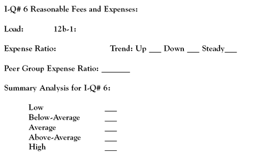

"In the mutual fund field, costs assume a tremendous importance for the long-term investor. Other things held equal, lower costs mean higher returns." -John Bogle, "Bogle on Mutual Funds: New Perspectives for the Intelligent Investor" (1994)
If you took a vote among investment professionals on the single most important investment quality to look for in a mutual fund, the result would readily confirm Mr. Bogle's position, which he has championed since he founded the Vanguard Group. Simply stated, costs reduce investment returns. While it is impossible to eliminate all fund-related expenses, it is possible, and necessary in this decade's low-return investment environment, to avoid some and minimize others. (To read more about John Bogle, see The Greatest Investors: John Bogle.)
So let's take a comprehensive look at all the costs and expenses associated with mutual fund investing and pinpoint key indicators in a fund's expense structure that will score high in a Fund Investment-Quality Scorecard and lead you to top performing, low-cost mutual fund investments.
There are essentially four major components of a mutual fund's overall cost structure: sales charges, expense ratios, transaction commissions and redemption fees. An understanding of what these costs are and how they impact a fund's performance is extremely important in making informed fund investing decisions.
Sales Charges
Among other distinguishing features, mutual funds are acquired with a sales charge (load) or without a sales charge (no load). If there is a load, the charge can be as high as 8%, although it seems that a 3-5.75% range is most common. This charge is paid by the investor (the buyer of the fund) to the seller (a financial intermediary such as a brokerage firm, insurance company, financial planner or investment advisor) for services rendered. The charge is deducted from the amount being invested.
No-load mutual funds are offered directly to the investing public by fund companies, or they are sold to investors by financial intermediaries who have a compensation arrangement (hourly, flat fee or a percentage of assets) with the purchaser. In this case, a sales charge is not involved, and the investor fully invests his or her available money into funds sponsored by a no-load fund company. (For more insight, read The Lowdown On No-Load Mutual Funds.)
There are five general aspects of the load/no-load debate worth considering:.
A mutual fund's expense ratio is the result of a calculation as opposed to a type of expense. The ratio's numerator is the sum of a variety of administrative and operating expenses; its denominator is an average of the fund's assets. It is expressed as a percentage - lower is better - and is a key indicator of a fund's investment quality.
In general operating terms, stock funds are more expensive than bond funds, international funds are more expensive than domestic funds and small and mid cap funds are more expensive than large cap funds.
The largest component of a fund's operating expenses is the fee paid to its investment advisors, or managers. A fund must also pay for recordkeeping, custodial services, taxes, legal costs and accounting and auditing fees.
In addition to these conventional operating expenses, some funds also have a marketing, or distribution, fee commonly referred to as a 12b-1 fee. If this fee is charged, it is included in a fund's operating expenses, unlike a fund's sales charge, which is not considered an operating expense. In the mutual fund industry's early days, a provision in the regulations permitted funds to incur promotional expenses to help develop mutual fund activity. The maximum 12b-1 fee allowable is an annual 1% of a fund's assets. To be considered a no-load fund, the 12b-1 annual charge must be no more than 0.25%.
Many mutual fund observers find it hard to justify this type of fee. With the increasing popularity of mutual funds, how much more "promotion" is really necessary? Today, the 12b-1 fee is used almost exclusively to reward intermediaries for selling a fund's shares. There is a movement underway to eliminate the fee, but the fund industry as a whole is resisting the change.
Lastly, it seems that some mutual fund investors are not all that clear on how operating expenses are paid. The simple answer is that whatever is included in a fund's operating expense is charged against the assets under management. In other words, the fund's investors pay the tab. This is how costs reduce investment returns.
Invisible Charges
Investment experts have speculated that brokerage commissions can add as much as 0.15% to a fund's annual expenses. However, these costs are not included in a fund's expense ratio. They seem to fit the definition of an operating expense but, as of today, are not so considered.
Redemption Fee
Designed to discourage market timers, an increasing number of mutual funds are charging a flat fee, usually 1%, on withdrawals (shares redeemed) made within a certain time frame. Generally, redemption fees are in effect for one year or less following the date of the investor's initial purchase. If you are an investor (in for the long term), as opposed to a speculator (in and out for the short term), this type of fee will have no effect on your fund investment.
Also remember that a mutual fund is a business and seeks to return a legitimate profit to its owners. The fund business is a very profitable one. As such, investors should seek out those funds that run a lean operation and align their interests with those of investors for a win-win relationship.
Return to the Main Menu.
One of the most important criteria for finding investment quality in a mutual fund is the indisputable fact that low-cost funds outperform high-cost funds. It is that simple. In terms of putting this concept into practice, mutual fund investors should:
1. Avoid funds with sales charges (loads) and 12b-1 fees. Choose funds with rock-bottom expense ratios.
Besides adding to your initial cost of investing, investing in a fund with a load incurs a "hidden fee." To illustrate how this happens, let's compare two fund investments. The XYZ Fund and the ABC Fund are similar in all respects with the exception that XYZ has an up-front sales charge of 5.75% and ABC is no load. The assumed annual total return for both funds is a steady 8% on the amount invested.
Deducting the 5.75% load ($575) from the initial investment of $10,000 in XYZ leaves $9,425 to compound at an 8% rate. With the ABC no-load fund, the full $10,000 compounds at the same rate.
The difference in compounded total returns between the XYZ Fund and the ABC Fund for the indicated time periods are $1,241, $2,680 and $5,786, all in favor of ABC. Looked at another way, the investment in XYZ, because of the lower discounted initial investment amount ($9,425), cost that investor a "hidden fee" equal to the difference of the compounded total returns.
Equating fund investment quality with a low expense ratio is a well established conclusion of a number of investment research studies. According to the Boston-based Financial Research Corporation (FRC), not only is the expense ratio the best predictor of performance, it is the only statistically reliable predictor. In July 2005, MarketWatch's Paul Farrell reported on a then recently completed FRC study:
| Details | ABC Fund | XYZ Fund | Differential |
| Funds to Invest | $10,000 | $10,000 | -0 |
| Minus Load | -0 | $575 | $575 |
| Actual Investment | $10,000 | $9,425 | $575 |
| Compounded Return | |||
| 10-year | $21,589 | $20,348 | $1,241 |
| 20-year | $46,610 | $43,930 | $2,680 |
| 30-year | $100,627 | $94,841 | $5,786 |
The FRC tested 11 popular criteria investors use to pick funds: Morningstar ratings, past performance, turnover ratios, asset size, expense ratios, manager tenure and net sales, plus four risk/volatility measures - standard deviation, alpha, beta and the Sharpe ratio. FRC's research suggested that the expense ratio was the most reliable predictor.
According to FRC, funds with low operating costs deliver above-average future performance across nearly all time periods. Other criteria proved to be statistically unreliable predictors - including Morningstar's popular star ratings and the Sharpe ratio, which calculates risk-reward variables for investments. (To learn more, read The Sharpe Ratio Can Oversimplify Risk.)
2. When it comes to mutual fund costs and expenses, a mutual fund's investment quality increases with the absence of sales charges and 12b-1 fees and the presence of low expense and portfolio turnover ratios. Low-cost funds outperform high-cost funds.
To help readers get a quantitative fix on expense ratios, let's look at some averages by broad fund categories as per Morningstar's FundInvestor year-end 2005 fund statistics for its universe of 500 of the most widely traded mutual funds:
| Large Cap Stock | 1.35% to 1.53% |
| Mid Cap Stock | 1.47% to 1.62% |
| Small Cap Stock | 1.50% to 1.71% |
| Allocation Funds | 1.49% |
| Foreign Stock | 1.71% |
| Emerging Market Stock | 1.98% |
| High Quality Bond | 1.02% |
| High Yield Bond | 1.27% |
Most top-rated domestic stock funds are going to have expense ratios around the 1% mark. Those of low-cost fund companies will be at or below 0.75%.
Return to the Main Menu.
The Morningstar and Value Line fund reports have multi-year expense ratio data and information on load and 12b-1 charges. In the case of the latter, you have to search a bit for it in the Morningstar report. It appears at the very bottom of the report after the "Dist." caption.
The Value Line report makes the best comparative expense ratio presentation. On the line below a fund's historical expense ratio, Value Line indicates how the fund's expenses compare to its category average on a multi-year basis. The category average is deemed to equal 1. A figure greater than 1 signifies that the fund has higher-than-average expenses, while a figure below 1 represents proportionately lower expenses:
This is the entry we need to complete in the Fund Investment-Quality Scorecard for an analysis of a mutual fund's fees and expenses:
In looking for high investment quality in the area of fund fees and expenses, it is preferable to not find any sales or so-called distribution (12b-1) charges. Ideally, investors should find a fund with an expense ratio far below its category and peer group averages, with a trend over the past five years that is holding steady or, better yet, declining. In the "Summary Analysis," only funds with "low" or "below average" fees and expenses are going to be worthy of consideration.
{kind=link}